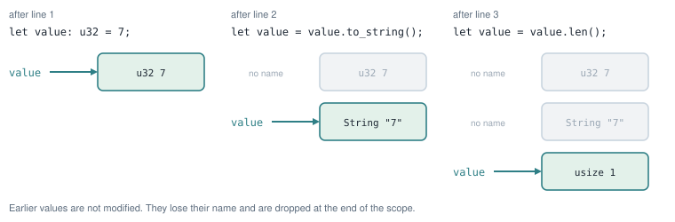
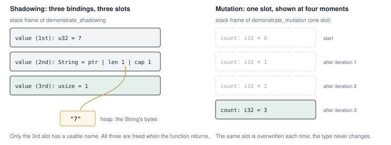
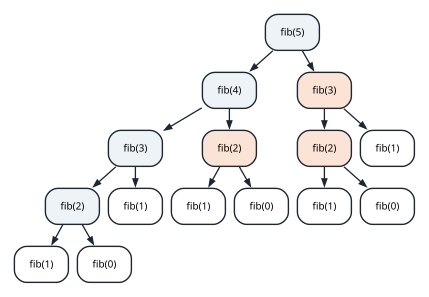
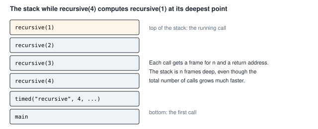

Bindings, functions, and loops
This chapter covers
- How a
letbinding works and where its value resides in memory - Shadowing an identifier, and how it differs from in-place mutation with
mut - Recursive functions and their stack-frame allocation behavior
- Replacing direct recursion with an iterative loop and with a memoization table
- Measuring execution time with
Instant, and passing functions as arguments
Every compiled program maps source-level identifiers onto concrete storage locations and control-flow frames. In Rust, lexical bindings, explicit mutability, and deterministic stack-frame reclamation govern how values occupy memory across function invocations.
Two programs illustrate these foundational mechanics. The first binds a single identifier to three values of distinct types in sequence, contrasting lexical shadowing with in-place mutation of a mutable slot. The second evaluates Fibonacci numbers through direct recursion, constant-space iteration, and memoization, demonstrating how recursive call trees consume stack memory and how algorithmic structure dictates asymptotic execution time.
Four definitions establish the memory model used throughout:
- A binding associates an identifier with a typed value; for example,
let x = 5;bindsxto5. - A lexical scope is the syntactic region in which a binding remains valid, delimited in Rust by
{and}. - The call stack is the contiguous LIFO memory region holding activation records for active function invocations.
- A stack frame (activation record) is the fixed-size slice of stack memory allocated upon entering a function to store its parameters, return address, and local bindings.
1.1 A binding is a name for a value
Upon function entry, the runtime allocates a stack frame sized statically from the types of its local bindings. Fixed-size scalar bindings occupy adjacent slots within that frame: a u32 requires 4 bytes, whereas a usize requires 8 bytes on a 64-bit architecture.
Dynamically sized types such as String partition their representation across the stack and the heap, a dynamically managed memory pool obtained from the system allocator. Because string length varies at runtime, the UTF-8 character bytes reside in a heap-allocated buffer, while the stack frame holds a three-word header consisting of a pointer to that buffer, the current byte length, and the allocated capacity.
Upon function return, the stack frame is popped and every local binding undergoes deterministic destruction in reverse declaration order. Dropping a String deallocates its backing heap buffer automatically.
1.2 Shadowing: one name, several values
Declaring a second let statement with an identifier already in scope does not overwrite the original value. Instead, it creates a distinct binding that reuses the identifier, hiding the earlier value from subsequent statements. Rust terms this mechanism shadowing. The original value remains alive until the enclosing scope exits, though it is no longer reachable by name.
Because each shadowed binding is an independent variable, its type can differ from the previous binding. Figure 1.1 traces the identifier value across three bindings of three different types.

let creates a new value and moves the name to it. The earlier values are not changed; they lose their name.Listing 1.1 implements this three-step sequence.
Listing 1.1 One name, three types. src/bin/shadowing.rs, lines 27 to 41
fn demonstrate_shadowing() -> String {
// First binding is an integer.
let value: u32 = 7;
let mut log = format!("integer: {value}");
// Shadow the integer with a String. The old integer is gone.
let value = value.to_string();
log.push_str(&format!("\nstring: {value}"));
// Shadow the String with a usize computed from it.
let value = value.len();
log.push_str(&format!("\nusize: {value}"));
log
}Tracing the three let value statements in order clarifies how evaluation proceeds:
let value: u32 = 7;initializes au32binding.let value = value.to_string();reads theu32, allocates aStringcontaining its decimal representation, and bindsvalueto thatString. On the right-hand side,valuestill resolves to theu32because the new binding enters scope only after the initializer finishes evaluating.let value = value.len();reads the byte length of theStringand bindsvalueto the resultingusize.
None of these bindings require mut because every value remains immutable after initialization. By contrast, log accumulates output lines via push_str, so it is declared let mut log, allowing the unit tests to verify all three intermediate states.
Figure 1.2 (left) depicts the conceptual stack frame after the third binding: three distinct slots exist, with only the final slot remaining accessible by name.

1.2.1 When shadowing helps
Shadowing is well suited to staged data transformations where an input arrives in one representation and must be converted into another. For example, numeric input from a user arrives as raw text; once parsed, the unparsed string is no longer needed and can be shadowed by the parsed integer:
let count = read_line_from_user(); // a String, for example "42"
let count: u32 = count.trim().parse().expect("a number");After the second line, count has type u32. Subsequent code cannot accidentally reference the raw string because its identifier has been rebound.
1.2.2 A value captured earlier keeps its old value
A closure or reference created prior to a shadowing let remains bound to the original variable:
let x = 1;
let show = || println!("{x}");
let x = x + 1; // a new x
show(); // prints 1Because the second let allocates a new binding rather than modifying the first, the closure continues to observe the original x.
WARNING: Writing let x = x + 1; inside a loop body introduces a new binding scoped exclusively to that single iteration. On the next iteration, the outer x retains its original value. To accumulate state across iterations, declare let mut x outside the loop and update it with x += 1.
1.3 Mutation: one value that changes
When a single storage location must change over time, declare the binding with mut. The type remains fixed, and every assignment overwrites the same stack slot in place.
Listing 1.2 A counter that changes in place. src/bin/shadowing.rs, lines 43 to 53
fn demonstrate_mutation() -> String {
// If you need to mutate the same binding's value (same type) without
// creating a new binding, mark it `mut`.
let mut count = 0;
let mut log = String::from("mut count:");
for _ in 0..3 {
count += 1;
log.push_str(&format!(" {count}"));
}
log
}The header for _ in 0..3 executes the body three times while discarding the loop index with the wildcard _. Each iteration increments count in place and appends the updated value to log. Figure 1.2 (right) illustrates the single slot for count across its four states.
Table 1.1 summarizes the behavioral differences between shadowing and mutation.
Shadowing (let x = ... again) | Mutation (let mut x, then x = ...) | |
|---|---|---|
| Creates a new variable | yes | no |
| Can change the type | yes | no |
Needs mut | no | yes |
A closure that captured x earlier sees | the old value | a compile error if it is still in use |
1.4 The first complete program
Listing 1.3 presents the complete shadowing.rs binary, including its entry point and unit tests.
Listing 1.3 The complete program. src/bin/shadowing.rs
// ============================================================================
// Variable shadowing vs mutation
//
// Ported from the Rust playground repo (`shadowing.rs`).
//
// What this demonstrates:
// - Rust allows a new `let` binding with the same name as an existing
// binding. This is called **shadowing**.
// - Shadowing can change the value *and the type* of a variable without
// declaring it `mut`.
// - The old binding is no longer reachable after the shadowing `let`.
//
// Where this appears in practice:
// - Rust SDK code often shadows parsed/deserialized values to convert them
// from raw input to typed domain values:
//
// let raw = request.header("X-GPU-Count")?;
// let raw: u64 = raw.parse()?; // shadow with a typed value
//
// - Shadowing is also useful after unwrapping an `Option`/`Result` when the
// guard value is no longer needed.
//
// Run:
// cargo run --bin shadowing
// ============================================================================
fn demonstrate_shadowing() -> String {
// First binding is an integer.
let value: u32 = 7;
let mut log = format!("integer: {value}");
// Shadow the integer with a String. The old integer is gone.
let value = value.to_string();
log.push_str(&format!("\nstring: {value}"));
// Shadow the String with a usize computed from it.
let value = value.len();
log.push_str(&format!("\nusize: {value}"));
log
}
fn demonstrate_mutation() -> String {
// If you need to mutate the same binding's value (same type) without
// creating a new binding, mark it `mut`.
let mut count = 0;
let mut log = String::from("mut count:");
for _ in 0..3 {
count += 1;
log.push_str(&format!(" {count}"));
}
log
}
fn main() {
println!("=== Shadowing ===");
println!("{}", demonstrate_shadowing());
println!("\n=== Mutation ===");
println!("{}", demonstrate_mutation());
}
// ============================================================================
// Tests (cargo test --bin shadowing)
// ============================================================================
#[cfg(test)]
mod tests {
use super::*;
#[test]
fn shadowing_allows_type_changes() {
let log = demonstrate_shadowing();
assert!(log.contains("integer: 7"));
assert!(log.contains("string: 7"));
assert!(log.contains("usize: 1"));
}
#[test]
fn mutation_requires_mut_binding() {
let log = demonstrate_mutation();
assert!(log.contains("mut count: 1 2 3"));
}
}The unit tests reside in a module annotated with #[cfg(test)], which instructs the compiler to compile this module exclusively during cargo test. Inside the module, use super::*; imports the parent module’s items into scope, and each test verifies the formatted log output with assert!.
Running the binary and its test suite from the rust-interview-lab directory produces:
$ cargo run --bin shadowing
=== Shadowing ===
integer: 7
string: 7
usize: 1
=== Mutation ===
mut count: 1 2 3
$ cargo test --bin shadowing
running 2 tests
test tests::mutation_requires_mut_binding ... ok
test tests::shadowing_allows_type_changes ... ok
With single-frame storage established, nested invocations introduce a second dimension of stack management: activation-record accumulation during recursion.
1.5 A function that calls itself
The Fibonacci sequence begins with 0 and 1, and each subsequent term is the sum of the two preceding terms:
| n | 0 | 1 | 2 | 3 | 4 | 5 | 6 | 7 | 8 |
|---|---|---|---|---|---|---|---|---|---|
| fib(n) | 0 | 1 | 1 | 2 | 3 | 5 | 8 | 13 | 21 |
This recurrence translates directly into a recursive function, a function that invokes itself.
Listing 1.4 Fibonacci by recursion. src/bin/cs_fib.rs, lines 8 to 15
use std::time::{Duration, Instant};
/// Exponential: fib(n) recomputes fib(n - 1) and fib(n - 2) from scratch.
fn recursive(n: u64) -> u64 {
if n < 2 {
n
} else {
recursive(n - 1) + recursive(n - 2)
}
}Inputs 0 and 1 form the base case, returning n directly without further calls. For any n >= 2, the function makes two recursive calls and sums their results. Because if is an expression in Rust, its evaluated branch serves as the function’s return value without an explicit return statement.
1.5.1 Counting the calls
Tracing recursive(5) reveals significant redundant work: recursive(5) invokes recursive(4) and recursive(3), and recursive(4) invokes recursive(3) a second time. Figure 1.3 illustrates the complete call tree.

recursive(5). Shaded calls repeat work that another branch already did: fib(3) is computed twice and fib(2) three times.Evaluating n = 5 requires 15 calls. Because the call tree for n contains both the tree for n - 1 and the tree for n - 2, the total call count grows by roughly a factor of 1.618 per increment of n. At n = 30, the function executes approximately 2.7 million calls; at n = 90, the call count exceeds 1019.
1.5.2 What each call uses on the stack
Every active invocation allocates its own stack frame containing its parameter n and return address, and releases that frame upon returning. Consequently, the stack never holds the entire call tree simultaneously; it holds only the active chain of pending calls. Figure 1.4 depicts the deepest stack state reached during recursive(4).

recursive(4). The depth is about n frames, while the number of calls grows much faster.Direct recursion therefore incurs two distinct costs: exponential time complexity O(\varphin) caused by overlapping subproblems, and linear stack depth O(n) proportional to the input parameter. Although a depth of 90 frames is negligible, linear recursion depth exhausts the call stack on large inputs.
1.6 The same numbers with a loop
Computing the next Fibonacci number requires only the two preceding values. An iterative loop can maintain those two values in registers or stack slots and advance them one step per iteration.
Listing 1.5 Fibonacci with a loop. src/bin/cs_fib.rs, lines 17 to 24
/// Linear time, constant space.
fn iterative(n: u64) -> u64 {
let (mut previous, mut current) = (0u64, 1u64);
for _ in 0..n {
(previous, current) = (current, previous + current);
}
previous
}The declaration let (mut previous, mut current) = (0u64, 1u64); destructures a tuple to initialize both bindings in one statement, with the u64 suffix fixing the integer width.
Inside the loop, (previous, current) = (current, previous + current); updates both bindings simultaneously. Rust evaluates the entire right-hand tuple using the pre-update values before writing to the left-hand targets, eliminating the need for an explicit temporary variable.
Tracing iterative(5) confirms the state transitions:
| after pass | 0 (start) | 1 | 2 | 3 | 4 | 5 |
|---|---|---|---|---|---|---|
previous | 0 | 1 | 1 | 2 | 3 | 5 |
current | 1 | 1 | 2 | 3 | 5 | 8 |
After five iterations, previous holds 5, which equals fib(5). Because the loop executes n iterations using two fixed-size integers, its running time is linear in n and its memory usage is constant.
1.7 Recursion with a memory
To preserve the recursive formulation while eliminating redundant recomputation, each subproblem result can be recorded upon first evaluation and retrieved on subsequent visits. This technique is memoization, and the auxiliary lookup table storing evaluated subproblems is a cache.
Listing 1.6 Fibonacci with a cache. src/bin/cs_fib.rs, lines 26 to 41
/// Linear time, linear space: recursion plus a cache of subproblem answers.
fn memoized(n: u64) -> u64 {
fn go(n: u64, cache: &mut [u64]) -> u64 {
if n < 2 {
return n;
}
let index = n as usize;
if cache[index] == 0 {
cache[index] = go(n - 1, cache) + go(n - 2, cache);
}
cache[index]
}
let mut cache = vec![0u64; n as usize + 1];
go(n, &mut cache)
}Three Rust constructs appear in Listing 1.6:
- Nested function definitions:
gois declared insidememoized, restricting its visibility to the enclosing function. Unlike a closure, a nestedfndoes not capture local variables from its enclosing scope. vec![0u64; n as usize + 1]: This macro allocates a heap-backedVecinitialized withn + 1zeros. The castn as usizeconvertsu64tousize, Rust’s pointer-sized indexing type.&mut [u64]: A mutable slice provides a borrowed, writable view into the vector’s contiguous elements. Passing the cache by mutable slice allows every recursive call to share one table without copying it.
On each invocation, go handles the base cases first and then inspects cache[index]. A zero entry indicates an uncomputed value, prompting two recursive calls whose sum is stored in the table before returning.
Using zero as an empty sentinel is valid here because fib(n) is strictly positive for all n >= 2, and smaller inputs return before consulting the cache. Figure 1.5 depicts the cache contents after memoized(6) completes.

memoized(6). Each slot from 2 to 6 is computed once and then read.With memoization, every subproblem from 2 to n is evaluated exactly once, reducing execution time to linear in n. Memory consumption remains linear in n for both the heap cache and the n active stack frames.
Animation 1.1 contrasts memoized(5) and recursive(5) side by side. The call tree on the left records every invocation, while the stack on the right tracks only the frames currently awaiting a return value.
1.8 Timing the three versions
To compare all three implementations quantitatively, the program wraps each invocation in a timing helper.
Listing 1.7 Timing a function and printing the result. src/bin/cs_fib.rs, lines 43 to 51
fn timed(label: &str, n: u64, operation: impl Fn(u64) -> u64) {
let start = Instant::now();
let value = operation(n);
report(label, n, value, start.elapsed());
}
fn report(label: &str, n: u64, value: u64, elapsed: Duration) {
println!(" {label:<10} fib({n:>2}) = {value:<20} in {elapsed:?}");
}The parameter operation: impl Fn(u64) -> u64 accepts any function item or closure that maps a u64 to a u64, enabling main to pass recursive, iterative, and memoized directly by name.
Instant::now() samples a monotonic clock that never moves backward, and start.elapsed() computes the interval as a Duration.
In report, format specifiers control column alignment: {label:<10} left-aligns the label within a 10-character field, {n:>2} right-aligns n within 2 characters, and {elapsed:?} invokes Duration’s debug formatter, which automatically scales units to nanoseconds, microseconds, or milliseconds.
1.9 The complete Fibonacci program
Listing 1.8 combines all three implementations, the timing harness, and the verification loop in main.
Listing 1.8 The complete program. src/bin/cs_fib.rs
//! Three ways to compute Fibonacci: naive recursion, iteration, and memoization.
//! The first shows why exponential blowup happens; the other two fix it.
//!
//! Run with: cargo run --bin cs_fib
use std::time::{Duration, Instant};
/// Exponential: fib(n) recomputes fib(n - 1) and fib(n - 2) from scratch.
fn recursive(n: u64) -> u64 {
if n < 2 {
n
} else {
recursive(n - 1) + recursive(n - 2)
}
}
/// Linear time, constant space.
fn iterative(n: u64) -> u64 {
let (mut previous, mut current) = (0u64, 1u64);
for _ in 0..n {
(previous, current) = (current, previous + current);
}
previous
}
/// Linear time, linear space: recursion plus a cache of subproblem answers.
fn memoized(n: u64) -> u64 {
fn go(n: u64, cache: &mut [u64]) -> u64 {
if n < 2 {
return n;
}
let index = n as usize;
if cache[index] == 0 {
cache[index] = go(n - 1, cache) + go(n - 2, cache);
}
cache[index]
}
let mut cache = vec![0u64; n as usize + 1];
go(n, &mut cache)
}
fn timed(label: &str, n: u64, operation: impl Fn(u64) -> u64) {
let start = Instant::now();
let value = operation(n);
report(label, n, value, start.elapsed());
}
fn report(label: &str, n: u64, value: u64, elapsed: Duration) {
println!(" {label:<10} fib({n:>2}) = {value:<20} in {elapsed:?}");
}
fn main() {
println!("small input, all three should agree");
timed("recursive", 20, recursive);
timed("iterative", 20, iterative);
timed("memoized", 20, memoized);
println!("\nrecursive cost grows quickly");
timed("recursive", 30, recursive);
timed("iterative", 30, iterative);
println!("\nlarge input: recursion alone would not finish");
timed("iterative", 90, iterative);
timed("memoized", 90, memoized);
for n in 0..20 {
assert_eq!(recursive(n), iterative(n));
assert_eq!(memoized(n), iterative(n));
}
assert_eq!(iterative(30), 832_040);
assert_eq!(iterative(90), 2_880_067_194_370_816_120);
println!("\nall checks passed");
}Near the end of main, a loop verifies that all three implementations produce identical outputs for every n below 20, terminating via assert_eq! on any discrepancy. Two final assertions validate fib(30) and fib(90) against known reference values.
Executing the default debug build with cargo run yields:
$ cargo run --bin cs_fib
small input, all three should agree
recursive fib(20) = 6765 in 90.908µs
iterative fib(20) = 6765 in 567ns
memoized fib(20) = 6765 in 10.826µs
recursive cost grows quickly
recursive fib(30) = 832040 in 11.124774ms
iterative fib(30) = 832040 in 542ns
large input: recursion alone would not finish
iterative fib(90) = 2880067194370816120 in 937ns
memoized fib(90) = 2880067194370816120 in 5.749µs
all checks passed
The recursive timings confirm the growth analysis from Section 1.5.1: increasing n from 20 to 30 multiplies runtime by roughly 120, matching 1.618^10 ≈ 123. At that growth rate, recursive(90) would require millennia, so main omits it.
Although both memoized and iterative scale linearly with n, memoized runs slower because it allocates a heap Vec and incurs recursive call overhead, neither of which the loop pays.
NOTE: fib(93) is the largest Fibonacci number representable in a u64; iterative(94) overflows. Debug builds trap integer overflow with a panic, whereas release builds wrap around in two’s complement arithmetic without signaling an error.
Summary
- A
letbinding associates an identifier with a fixed-size slot in the active stack frame. AStringstores its UTF-8 bytes in a heap-allocated buffer referenced by a three-word stack header (pointer, length, capacity). - Lexical shadowing introduces an independent binding that may assume a different type while leaving prior bindings immutable and unreachable by name. Closures capturing an earlier binding retain their reference to the original storage slot.
- Declaring a binding with
mutenables in-place mutation of a fixed-type storage slot. - Each active recursive invocation allocates a stack frame; unmemoized recursive Fibonacci recomputes overlapping subproblems, yielding exponential runtime and linear stack depth.
- An iterative loop maintaining only the two preceding recurrence terms computes
fib(n)in O(n) time and O(1) auxiliary space. - Memoization caches evaluated subproblems in an auxiliary table, reducing recursive Fibonacci to O(n) time at the cost of O(n) heap space and O(n) stack depth.
impl Fn(u64) -> u64accepts any function item or closure matching that signature, andInstantsamples a monotonic clock for elapsed-time measurement.
Exercises
- Add a call counter to
recursive, print the invocation count fornfrom 1 to 25, and verify that consecutive counts grow by approximately 1.6x. - Modify
memoizedso the cache storesOption<u64>rather than treating0as an empty sentinel. Explain why0is a valid sentinel for Fibonacci numbers but unsafe for functions that can legitimately return0. - Update
iterativeto returnOption<u64>usingchecked_add, so thatiterative(94)returnsNonerather than overflowing. - Run
cargo run --release --bin cs_fiband compare the optimized timings against the debug output above.